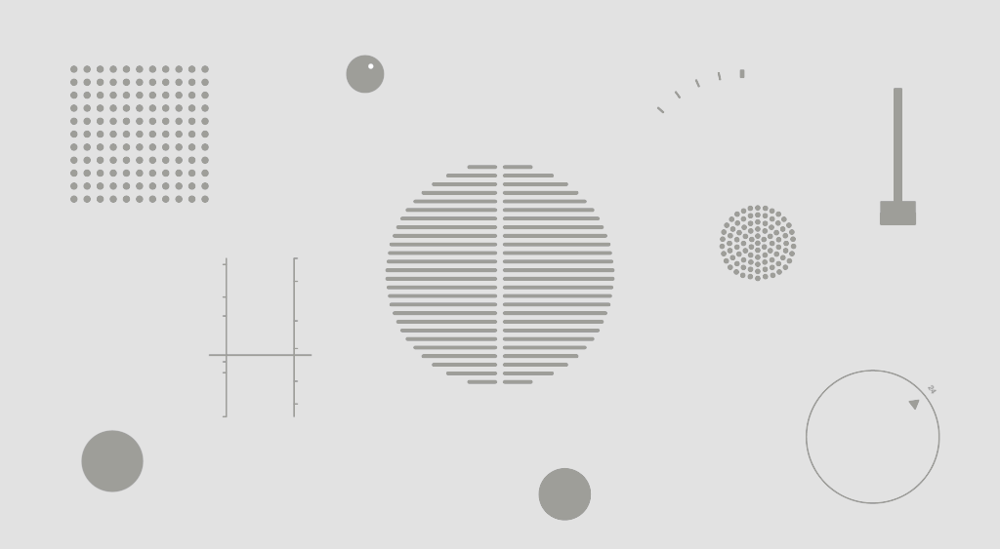

IN THE 1970s, RAMS ASKED HIMSELF "IS MY DESIGN A GOOD DESIGN?" AS A
RESULT, HE CAME UP WITH 10 PRINCIPLES
10 Principles of Good Design
Dieter Rams
1. GOOD DESIGN IS INNOVATIVE.
The possibilities for innovation are not, by any means, exhausted.
Technological development is always offering new opportunities for
innovative design. But innovative design always develops in tandem
with innovative technology, and can never be an end in itself.
2. GOOD DESIGN MAKES A PRODUCT USEFUL.
A product is bought to be used. It has to satisfy certain criteria,
not only functional, but also psychological and aesthetic. Good design
emphasises the usefulness of a product whilst disregarding anything
that could possibly detract from it.

3. GOOD DESIGN IS AESTHETIC.
The aesthetic quality of a product is integral to its usefulness
because products we use every day affect our person and our
well-being. But only well-executed objects can be beautiful.
4. GOOD DESIGN MAKES A PRODUCT UNDERSTANDABLE.
It clarifies the products structure. Better still, it can make the
product talk. At best, it is self-explanatory.
5. GOOD DESIGN IS UNOBTRUSIVE.
Products fulfilling a purpose are like tools. They are neither
decorative objects nor works of art. Their design should therefore be
both neutral and restrained, to leave room for the users
self-expression.
6. GOOD DESIGN IS HONEST.
It does not make a product more innovative, powerful or valuable than
it really is. It does not attempt to manipulate the consumer with
promises that cannot be kept.
7. GOOD DESIGN IS LONG-LASTING.
It avoids being fashionable and therefore never appears antiquated.
Unlike fashionable design, it lasts many years - even in today's
throwaway society.
8. GOOD DESIGN IS THOROUGH DOWN TO THE LAST DETAIL.
Nothing must be arbitrary or left to chance. Care and accuracy in the
design process show respect towards the consumer.
9. GOOD DESIGN IS ENVIRONMENTALLY FRIENDLY.
Design makes an important contribution to the preservation of the
environment. It conserves resources and minimises physical and visual
pollution throughout the lifecycle of the product.
10. GOOD DESIGN IS AS LITTLE DESIGN AS POSSIBLE.
Less, but better - because it concentrates on the essential aspects,
and the products are not burdened with non-essentials. Back to purity,
back to simplicity.